Dashboard
Joueurs en ligne, FPS, durée en ligne, versions et sauvegarde du monde, avec un raccourci vers chaque outil.
PalManager pilote ton serveur dédié Palworld via l'API REST officielle et le mod PalDefender : joueurs en direct, dons d'items et de Pals, guildes, carte, modération — et via SFTP, logs, fichiers et créateur de Pal.
Projet non officiel, sans lien avec Pocketpair.
Une interface sombre et lisible, pensée pour agir vite : de grosses cibles, des couleurs qui ont du sens, et chaque action à deux gestes du dashboard.
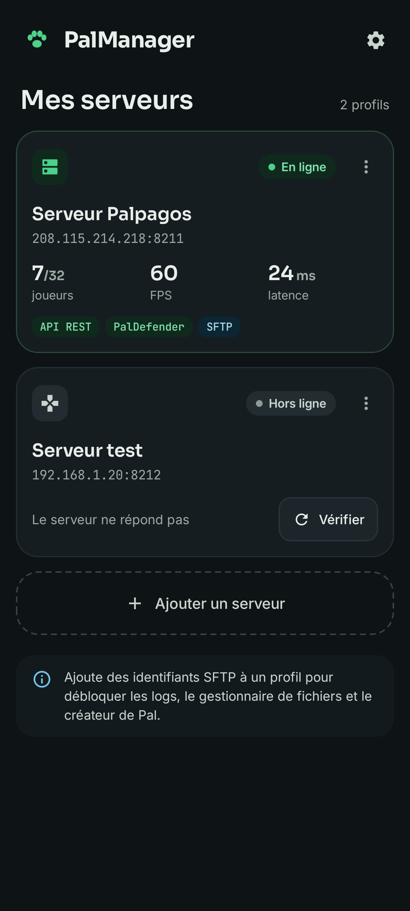
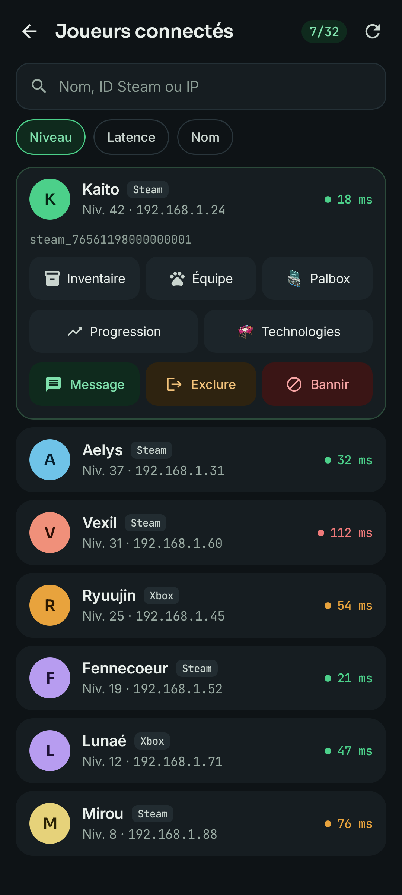
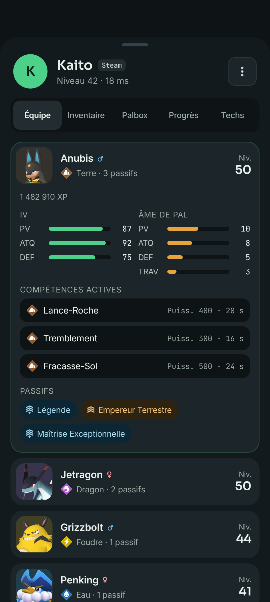
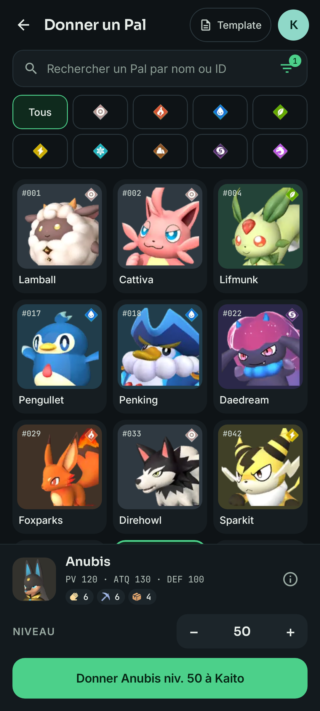
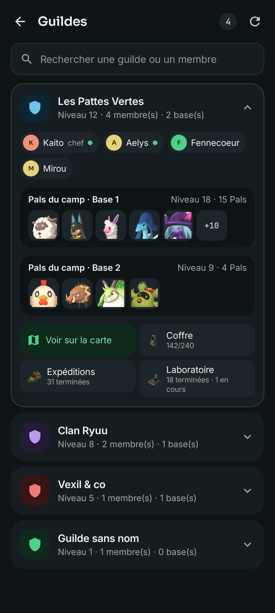
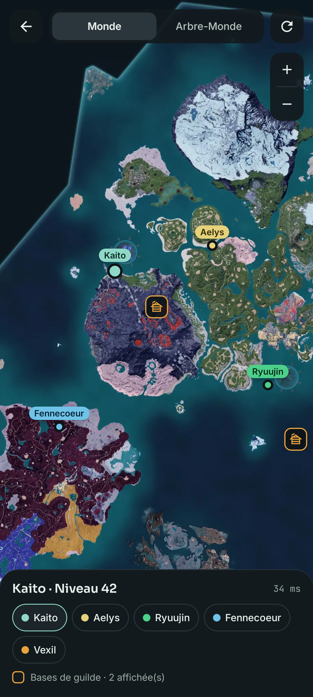
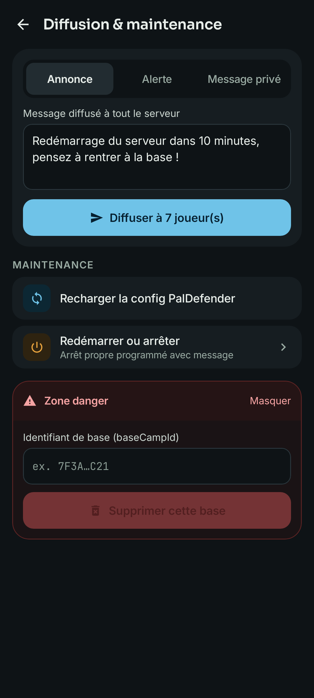
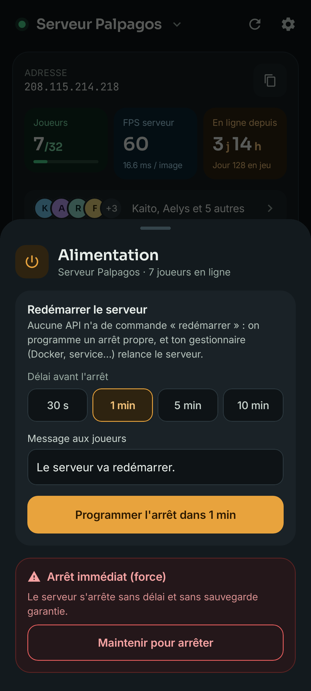
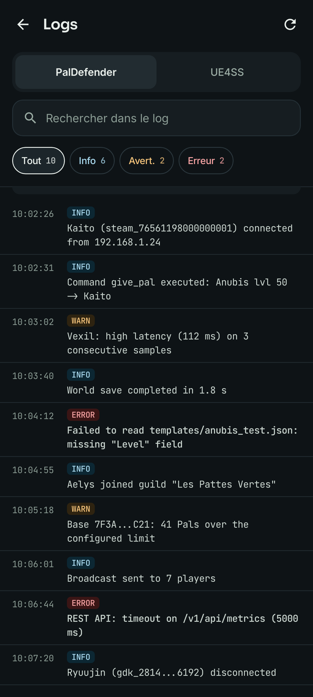
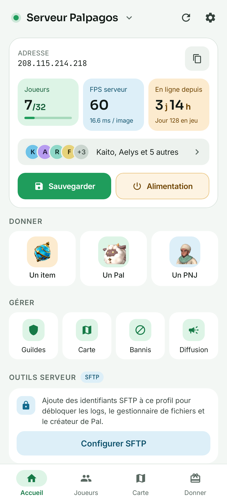
Tout ce dont un admin a besoin au quotidien, du canapé comme en déplacement.
Joueurs en ligne, FPS, durée en ligne, versions et sauvegarde du monde, avec un raccourci vers chaque outil.
Programme un arrêt propre avec délai et message aux joueurs, ou force l'arrêt avec un bouton à maintenir.
Chaque profil affiche son état en direct, et un bouton Vérifier teste les API et le SFTP en un geste.
Recherche, tri, message, exclusion, bannissement — et une fiche à onglets : équipe, inventaire, Palbox, progression, technologies.
Destinataire choisi une fois, catalogue embarqué avec filtres, quantité ou niveau, et don en un geste.
Membres en ligne, Pals de chaque camp, coffre, expéditions et recherches de labo.
Joueurs et bases de guilde sur les Îles Palpagos et l'Arbre-Monde, avec zoom.
Bannis et débannis des joueurs et des adresses IP.
Annonces, alertes, messages privés, rechargement de la config PalDefender et suppression de base.
Ajoute des identifiants SSH/SFTP à un profil de serveur pour aller plus loin que les API.
Logs PalDefender et UE4SS avec recherche, filtres par niveau et sévérité en couleur.
Parcourir, envoyer, télécharger, renommer, copier, couper, coller et supprimer — avec la clé hôte épinglée.
Construis un modèle de Pal PalDefender (espèce, niveau, IV, Âme de Pal, compétences, passifs) et enregistre-le directement sur le serveur.
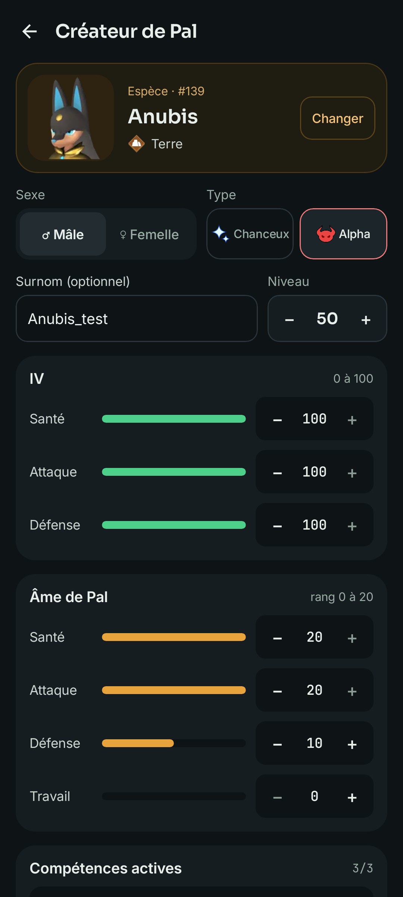
Il te faut un serveur Palworld avec son API REST, et le mod PalDefender pour les fonctions avancées.
Télécharge-le depuis la dernière version et ouvre-le sur ton téléphone (Android 8.0+).
Dans PalWorldSettings.ini : RESTAPIEnabled=True et un mot de passe admin.
Installe le mod PalDefender et active son API REST pour les dons, guildes et bans IP.
Hôte, ports (8212 et 17993 par défaut), mot de passe et token, SFTP en option — puis touche Vérifier.
L'app parle directement aux API de ton serveur. Aucun compte, aucun service intermédiaire.
Mots de passe et tokens sont chiffrés sur le téléphone ; la clé SSH du serveur est épinglée à la première connexion.
Pas de statistiques d'usage, pas de publicité, aucun SDK de pistage.
Téléchargement gratuit pour Android 8.0 et plus récent. En français et en anglais.